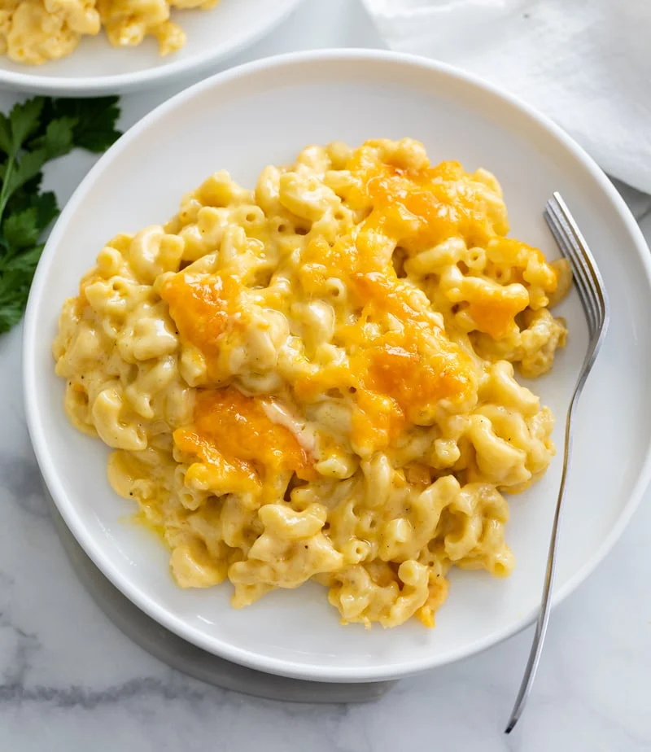

Baked Mac and Cheese

Description
This Baked Mac and Cheese recipe is easy to make with a creamy 3-cheese blend and perfectly cooked macaroni.
Ingredients
- 1 lb elbow macaroni
- 6 tablespoons butter
- 6 tablespoons flour
- 1 1/2 cups heavy cream
- 2 1/2 cups milk
- 1 teaspoon hot sauce
- 1 teaspoon mustard powder
- 1/2 teaspoon salt
- 1/4 teaspoon each onion powder, pepper
- 3 cups cheddar, shredded
- 2 cups gruyere, shredded
- 1 cup gouda, shredded